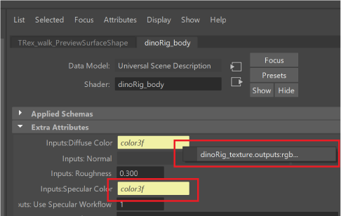
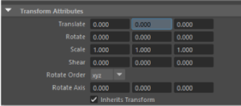

USD data in the Attribute Editor
Selecting a stage or prim in the Outliner or Viewport displays its attributes in the Attribute Editor. You can distinguish USD data in the Attribute Editor as it will read Universal Scene Description beside the Data Model label.
Display Settings in the Attribute Editor
AEmaxRelatedTabs now has a default value of 100.Array Attributes
You can toggle the view of USD array attributes on and off in the Attribute Editor. In the Attribute Editor, select Show > Universal Scene Description >  Show Array Attributes. Deselect the same checkbox to hide array attributes (hidden by default). Once this setting is toggled on, you can view useful widgets for Array Attributes in the Attribute Editor.
Show Array Attributes. Deselect the same checkbox to hide array attributes (hidden by default). Once this setting is toggled on, you can view useful widgets for Array Attributes in the Attribute Editor.
- Syntax for Array Attributes:
dataType[sizeofArray]. When an array attribute has a value contained in box brackets, on hover and rightclick, you can Copy Attribute Value or Print to Script Editor (with the same value as copy). Note: Custom array attributes and schemas with array datatypes also follow this syntax.
Connected Attributes
USD attributes that are connected can display in the AE. When an attibute is connected you can right click the widget with the Maya yellow foreground to display the connected attribute. When using this context menu, you can select to change the Attribute Editor to display the properties of that new prim.

Locked Attributes
You can lock and unlock USD attributes from being edited in the AE. You can right-click an attribute in the Attribute Editor to choose to Lock Attribute or Unlock Attribute as prompted. Locked attributes display with a traditional "grey bar" to the left of the field as displayed below and the attribute cannot be modified.

Attributes for a Stage (proxyShape node)
Stage
Root Layer: Identifies the root layer of a stage. If a file path is shown in this field, the root layer is a file on disk. If a
<layerName>is shown in this field, the root layer is an anonymous layer.Important: If the path of your root USD file is relative, this field will input the resolved relative path of your personal file directory (ie. this value will vary from computer to computer).Default Prim: As part of its metadata, each stage can identify a default prim. This is the primitive that is referenced in if you reference in a file.
- Shareable: This checkbox denotes if a stage is unshareable or shareable. Currently, stages in MayaUSD default to shareable. If you would like to have a "sandbox" version of a stage that comes pre-equipped with a new root layer, you can toggle the stage to be Unshareable. Edits to an unshareable stage would be serialized into your Maya scene file. You can use this checkbox to toggle back and forth between the shareable and unshareable stages in the Attribute Editor as you work.
 Shareable: If enabled (default), the stage is shareable. If a shared stage is brought into a Maya scene in multiple instances (ex. multiple Maya proxyShapes use the same USD stage source), all occurrences of the stage will reflect the same edits when manipulated and behave the same way.
Shareable: If enabled (default), the stage is shareable. If a shared stage is brought into a Maya scene in multiple instances (ex. multiple Maya proxyShapes use the same USD stage source), all occurrences of the stage will reflect the same edits when manipulated and behave the same way. - Use case of shareable stage: If you Create a Stage from File in Maya using
ExistingStageExampleand add a new anonymous layer to it, it is expected that if you create another Stage from File with the same stageExistingStageExample, this second stage will have the same new anonymous layer as well. Any edits to a layer in one stage are reflected in all other uses of the same stage. The two different proxyShapes are sharing the same stage. The stage's source File (as seen in the 'Stage Source' category in the Stage's AE template for USD) is one stage in memory. The two different proxyShape nodes grab this same stage because it's impossible to separate them as their 'Stage Source' is the same.
- Use case of shareable stage: If you Create a Stage from File in Maya using
 Unshareable: If disabled, the stage becomes unshareable. When unshareable, a stage is copied in memory as a ‘sandbox’ version with a pre-equipped root layer. Any edits to an unshareable stage are serialized into your Maya scene file.
Unshareable: If disabled, the stage becomes unshareable. When unshareable, a stage is copied in memory as a ‘sandbox’ version with a pre-equipped root layer. Any edits to an unshareable stage are serialized into your Maya scene file.- Use case of unshareable stage: When you have a shareable stage and then want to make it unshareable, it creates an exact copy of the stage but requires a unique factor to it, and hence implements a new anonymous root layer. This means that the Stage Source doesn't change, the unshareable stage is still driven by a File or a Stage Cache, yet the new root layer allows it to exist as a unique stage. Important: the new root layer cannot be saved to disk in an unshareable stage because if it could, then it would need to be shareable. Because the root layer is not saveable, the Save Stage icon disappears. Note: Any incoming layers (the layers powering the stage in the Stage Source) become uneditable. Any unsharebale stage thus allows you to create a 'sandbox' of edits for an existing stage and procedurally export those edits to a new file.
- Shareable: This checkbox denotes if a stage is unshareable or shareable. Currently, stages in MayaUSD default to shareable. If you would like to have a "sandbox" version of a stage that comes pre-equipped with a new root layer, you can toggle the stage to be Unshareable. Edits to an unshareable stage would be serialized into your Maya scene file. You can use this checkbox to toggle back and forth between the shareable and unshareable stages in the Attribute Editor as you work.
Stage Source
File: Load in a file as the stage source.
 Select the folder icon to bring up your file browser and locate a file on disk.
Select the folder icon to bring up your file browser and locate a file on disk.  Select the refresh icon to reload the file as the stage source.
Select the refresh icon to reload the file as the stage source.
Note: When reloading or choosing a new file, you will be prompted to verify if you want to discard edits (if there are any) on your layers in your current stage.Tip: You can access your file path with the folder icon to change whether your USD stage is an absolute or relative path to your Maya scene file. If your USD stage file is saved as relative to your Maya scene file, the input of this field will display relative to the directory of where your saved Maya scene file is located. Refresh or reload when your changes are complete. To learn more about saving USD files relatively, see Make Path Relative.
Stage Display
- Time: Edits the current time value of a stage, which corresponds to the animation frame drawn in the viewport. By default, this value connects to Maya's global time node.
- Prim Path: Specify the path of a prim to display it alone in the viewport. If a prim path is not specified or a matching prim path is not found, all prims in the stage are displayed.
- Exclude Prim Path: Specify the path of a prim to exclude it from the viewport display. Multiple prim paths must be separated by a comma.
Object Display
Purpose: Toggle purpose categories on and off to change their visibility in the Viewport. Set the purpose of prims individually to use this category filter on the stage and witness the filter in the Viewport.
Note: These checkboxes can work simultaneously. For example, Proxy and Guide can both be toggled on.
Attributes for a Prim
Attributes for prims follow a schema-based categorization method. This system of schema inherits groups attributes per schema, allowing for custom attributes to follow their appropriate schema base. This system also allows for these custom schemas to be grouped by order in the schema inheritence system.
Related Concepts: To learn more about this inhertiance system, see the USD schema inheritance diagram from the USD API documentation and USD schema classes in the Pixar USD Glossary.
Xformable
- Transform operations are classified as one of UsdGeomXformOpTypes (translate, scale, rotatex, rotate, rotatez, rotateXYZ, orient, transform, etc.), which determines the type of transformation operation. By default, transform attributes are displayed in the Transform Attributes section, under Xformable operations of the Attribute Editor. All of the attributes are displayed in
Xform Oporder, followed by theXform Op Orderattribute. Each time you transform an object, theXform Opattributes update.
Imageable
Visibility: When set to Invisible, the selected prim and its descendants are hidden in the Viewport. When set to Inherited, the visibility of the selected prim is the same as the prim's parent. For more information, see Visibility in the Pixar USD Glossary.
Note:This is connected to the Visibility option in the USD context menu in the Outliner. When you select Make Invisible from the Outliner context menu, this option is set to Invisible.
Purpose: Lets you classify prims (geometry) into visibility categories, so they can each be included or excluded from traversals of prims on a stage. Assign the purpose of a prim to specify its render fidelity in the viewport. When purpose is assigned to a prim, it overrides the purpose of its descendants. When purpose is set, the viewport display can be filtered by purpose categories under Object Display for the stage (proxyShape node).
- Guide: Assign to prims intended as markings, lines, arrows or interaction guides.
- Proxy: Assign to prims intended for lightweight proxy rendering.
- Render: Assign to prims intended for final high-quality rendering.
Related Concepts: See Purpose and Stage Traversal in the Pixar USD Glossary.
Applied Schemas
A schema class is a container of a usd prim that provides a layer of specific, named API atop the underlying scenegraph. For advanced users, USD provides a code generator script called 'usdGenSchema' for creating new schema classes. Schemas are customizable and these customized schemas are viewable from the Attribute Editor. The Attribute Editor also displays applied schemas on prims and groups attributes coming from applied schemas into their own category in the Attribute Editor.
Metadata
Prims and properties in USD can possess metadata, but metadata cannot itself have metadata. Metadata are pre-loaded string values used extensibly. However adding a new, named piece of metadata requires a change to a configuration file to do so, as Maya software needs to know definitively what the datatype of the metadatum should be.
- Prim Path: (read-only) This field shows the path of a selected prim.
- Kind: Kind is a type of metadata used to classify prims in USD. Set the classification value from the dropdown in this menu to assign a kind category to a prim. Once, a kind value is set to a prim, you can activate Selection by Kind.
- Active: If selected, the prim is set to active and contributes to the composition of a stage. If a prim is set to inactive, it doesn’t contribute to the composition of a stage (it gets striked out in the Outliner and is deactivated from the Viewport).
- Instanceable: If selected, instanceable is set to true for the prim and the prim is considered a candidate for instancing. For example, in the Script Editor, if selected, then the prim is now tagged for 'instanceable'. In the code, you can see the prim will have
instanceable = true.
Attributes for Prims with Dependencies
Relative Pathing for Textures and References
If you have MayaUSD and no LookdevX loaded, it is impossible to create a texture on a prim. You need LookdevX to do this. However, if you open a USD file with a texture already authored, you can change the texture to a relative path using the file browser in the Attribute Editor. For example, you can add a texture on a rectLight or DomeLight prim relatively or even add a non-image file such as a media file on a SpacialAudio prim or a Maya file on a MayaReference prim.
- To do this, click on the folder icon in the Attribute Editor of a file input you want to make relative and then toggle on Make Path Relative to Edit Target Layer Directory.
- Make Path Relative to Edit Target Layer Directory: Enable this toggle to activate relative pathing to your current edit target layer’s directory. If this option is disabled, verify that your target layer is not anonymous and save it to disk. See Make Path Relative.
- Path Preview: This field previews the path of your chosen working directory for your USD file, if you have relative pathing enabled. Note: The path preview for the file can vary for each individual as the file is handed off.
- Make Path Relative to Edit Target Layer Directory: Enable this toggle to activate relative pathing to your current edit target layer’s directory. If this option is disabled, verify that your target layer is not anonymous and save it to disk. See Make Path Relative.
- When importing or exporting your texture file paths in USD, ensure you use the Texture File Paths toggle in the import or export dialog to ensure your paths are saved relatively.